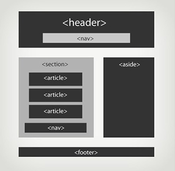

La balise Footer
À l'inverse de l'en-tête, l'élément footer représente le pied de page, ou bien la conclusion d'une section.. La balise < footer > est utilisée pour décrire le pied de page tout en bas d'un document ou d'une section et est censée contenir des informations relatives au contenu qui le précède telles que les données relative à l'auteur, des liens vers des documents similaires. Pour un pied de page générique de site, on y place des informations concernant l'auteur, des mentions légales, une navigation ou une pagination (en combinaison avec < nav>), un logo de rappel, des coordonnées, des dates de publication. On y place des informations concernant l'auteur, des mentions légales, une navigation ou une pagination (en combinaison avec < nav>), un logo de rappel, des coordonnées, des dates de publication.| Attributs | Désignation | Unités acceptées |
|---|---|---|
| Charset | défini le bas d'une section ou d'une page | texte |
Exemple
